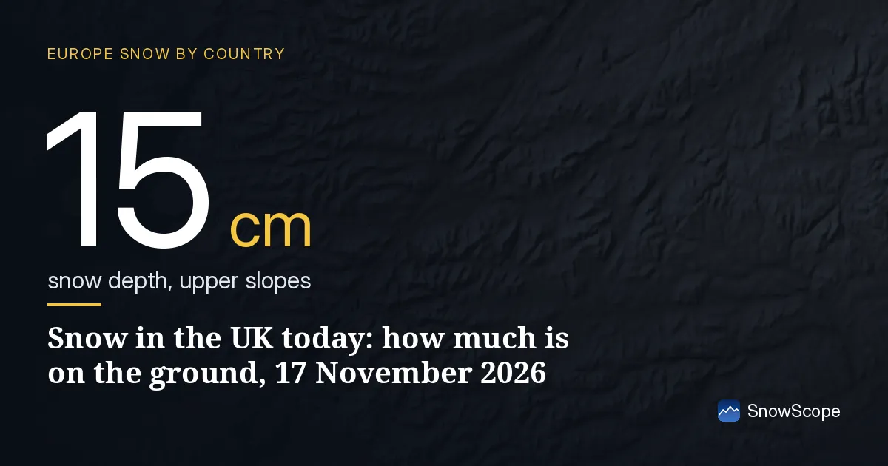
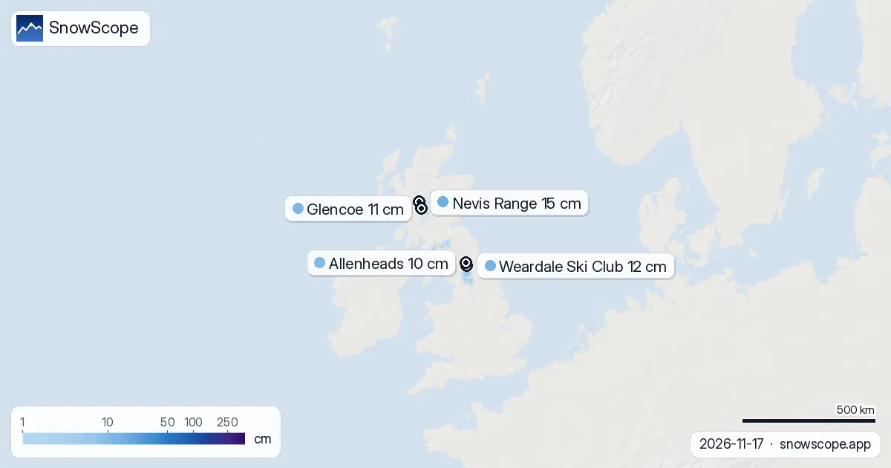
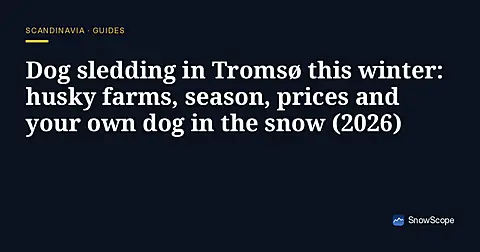

Snow in the UK today: how much is on the ground, 17 November 2026
8,380 km² of snow-covered ground in the UK this Tuesday, a gain of 2,640 km² in a day. Roughly 22 % of the country's mapped mountains and hills are covered.
See the live snow forecast for Nevis Range in the SnowScope appSnow depth, powder alerts and the 3D map, free.
Today's snow cover
Compared with 1,570 km² seven days ago, that is 6,810 km² more. The snow line sits near 700 m.
| Resort | Snow depth | New snow, 72 h | Coming, next days | Top |
|---|---|---|---|---|
| Nevis Range | 15 cm | 5 cm | 3 cm | 1,190 m |
| Weardale Ski Club | 12 cm | 19 cm | 0 cm | 658 m |
| Glencoe | 11 cm | 7 cm | 3 cm | 1,079 m |
| Allenheads | 10 cm | 27 cm | 0 cm | 447 m |
| Yad Moss | 10 cm | 16 cm | 0 cm | 719 m |

From the valleys to the summits
Snow depth on the ground, height by height: 0-500 m: on average 1 cm (14 % of the ground white); 500-1,000 m: on average 2 cm (42 % of the ground white); 1,000-1,500 m: on average 8 cm (100 % of the ground white).

On the ground
Fresh snow on top of the base means soft turns on the upper slopes, while the lower runs stay patchy.
Keep an eye on the forecast: the coming snow could change the picture quickly.
Where the fresh snow fell
In the last 72 hours the most new snow, up to 12 cm, fell over the North Pennines, the Southern Uplands and the Cairngorms.
In the past day, up to 12 cm was added.
About 6,130 km² received at least 5 cm.
Best resorts right now
Nevis Range leads with 15 cm on its upper slopes.
Then come Weardale Ski Club (12 cm), Glencoe (11 cm), Allenheads (10 cm) and Yad Moss (10 cm).
At Nevis Range: 5 cm of fresh snow over three days, 3 cm more expected by Friday 20 November.
Weardale Ski Club picked up 19 cm in the last three days and could add 0 cm by Friday 20 November.
11 of the 30 resorts we follow in the UK have snow on their upper slopes.
What is coming
Over the next three days up to 6 cm is expected, and up to 11 cm over the week.
Wednesday 18 November stands out, with up to 5 cm in a day.
Tips for skiers
- Read the local avalanche bulletin before going off-piste.
- Morning snow is firm after a clear night: wait for the sun on south faces.
- Check the resort's own lift status before you travel.
About these numbers
Resort snow depths are the deepest snow on the resort's upper slopes from the SnowScope snow model (about 1 km, run of 17 November); they are estimates for an area, not a measurement at one point. Station values are measurements on the date shown. Forecasts can change. Always read the official avalanche bulletin before going off-piste.
Cite this report
For research, teaching or the press: the numbers and charts are free to reuse under CC BY 4.0 with this citation.
SnowScope (2026), Snow in the UK today: how much is on the ground, 17 November 2026, https://snowscope.app/blog/en/2026/11/uk-snow-report-17-november-2026.html, accessed 2026-11-17
SnowScope (Atlas Labs). (2026, November 17). Snow in the UK today: how much is on the ground, 17 November 2026. SnowScope snow reports. https://snowscope.app/blog/en/2026/11/uk-snow-report-17-november-2026.html
BibTeX
@misc{snowscope2026uksnowreport17november20,
author = {{SnowScope (Atlas Labs)}},
title = {Snow in the UK today: how much is on the ground, 17 November 2026},
year = {2026},
month = nov,
howpublished = {\url{https://snowscope.app/blog/en/2026/11/uk-snow-report-17-november-2026.html}},
note = {Published 2026-11-17 12:53 UTC; accessed 2026-11-17}
}· CC BY 4.0 · Methods, data and tools →
Nevis Range: snow and temperature by height, this winter vs last (tools) →
Follow Nevis Range
Free: a message when fresh snow is coming, and the forecast every morning.
More snow reports

A practical guide to dog sledding around Tromsø in winter 2026-27: which husky farms the tourist board lists, when the snow season starts, what a ride costs, the polar night, and the rules for walking your own dog on snow and near reindeer.

Tampere dog owners, weekend of 14 November 2026: 0 cm of snow around the city on Friday, a trace of wet snow on Saturday. The city's dog parks, the leash rules, and what the ski-track rules will mean once the snow comes.

Tahko snow depth in mid-November 2026: the slope season opened on 13 November with 2 of 14 lifts, on made snow; the stations around measured 0 cm after a short 2 to 4 cm cover melted. The week ahead and 46 past winters.